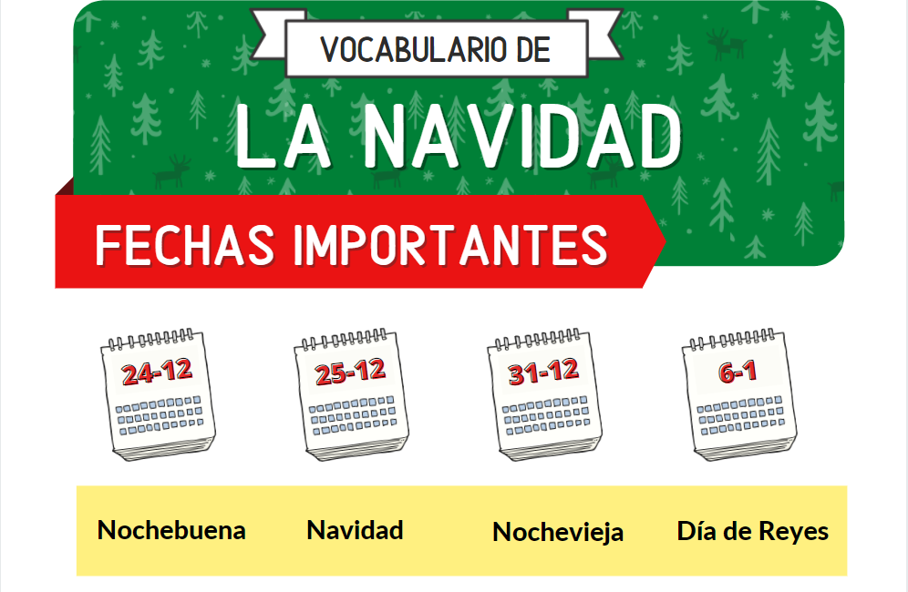

Clases de español
La Navidad

¿Cómo se llaman estas fechas importantes?
El 24 de diciembre es la _________.
El 25 de diciembre es el día de _________.
El 31 de diciembre es la _________.
El 6 de enero es el día de _________.

¿Y el 1 de enero? ¿cómo se llama?
Es el día de ____________.
¿En tu país se celebran estas fechas importantes? ¿Hay alguna fecha más en tu país?
Ahora vamos a completar los huecos de las siguientes oraciones.
Las palabras que van en los huecos son:
Los Reyes Magos, regalos,
lotería de Navidad, Papá Noel,
villancicos, árbol de Navidad,
muñeco de nieve, las compras navideñas,
turrón, uvas.
- En Nochevieja tomamos las doce _________.
- Nosotros ponemos un ___________ muy grande.
- _______________ son tres, Melchor, Gaspar y Baltasar.
- _______________ viaja con sus renos.
- Los Reyes Magos y Papá Noel reparten ____________ a los niños buenos.
- ¡Hay mucha nieve en la calle! ¡Vamos a hacer un _______________!
- El roscón de reyes y el ________ son mis comidas favoritas de Navidad.
- Mi abuela compra muchos décimos de _____________. Nunca gana nada, pero le gusta jugar.
- Uf, aún no he hecho __________________. No sé qué puedo comprar.
- Los niños cantan muchos _______________ en estas fechas.